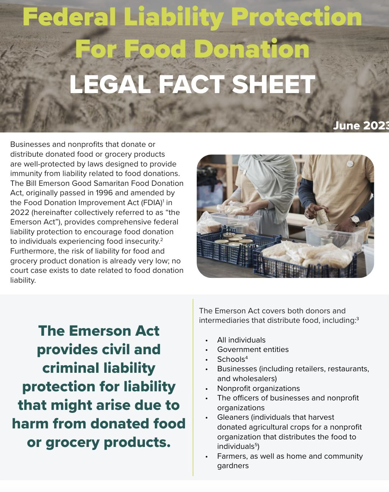

Every student, Every school, Every day, Every where!
Successfully diverting 40 to 60% of landfill designated waste by providing containers for liquids, organics, recycling and trash.
WHY IS FOOD RECOVERY IMPORTANT?
Food recovery is essential because it helps reduce environmental impact by preventing food waste from contributing to
landfills and greenhouse gas emissions. It also plays a critical role in addressing hunger by redirecting surplus
food to those in need, supporting vulnerable communities. Economically, food recovery saves money for businesses and households
and increases the efficiency of the food system. Ethically, it is a way to balance the abundance of food in some areas with the
scarcity in others. Overall, food recovery fosters a more sustainable, equitable, and responsible approach to food management.
You Can't Get Sued For Donating Food!
The Emerson Good Samaritan Food Act Protects You!

Our Mission
The goal for Lunch out of Landfills is to foster fundamental behavior change in how schools dispose of cafeteria trash while educating,
engaging and providing waste diversion options for students. 85% to 90% of cafeteria waste can be diverted by decontaminating recyclable materials,
extracting organics and liquids from the trash,
and recovering uneaten food thru share tables. Schools can also serve as hubs for collection of non recyclable, flexible plastic from home.
Not all communities have commercial compost facilities or haulers to collect the organics from schools. The ability to recycle plastics vary widely depending on the sorting capacity of local transfer stations. Schools will need to confirm what materials can be accepted by reaching out to the community Transfer station.
The goal is for schools and communities to divert as much waste as possible and to reduce landfill or incineration materials to a minimum. Communities may not have full capacity to compost or recycle trash but critical food recovery efforts need to begin everywhere as soon as possible.